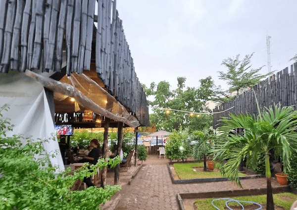

Village Themed Restaurant
Village Time — A warm, rustic escape where time slows down and every meal feels like home. Hearty comfort food made with locally sourced ingredients, served in a cozy, laid-back setting that brings the charm of village life straight to your table.
